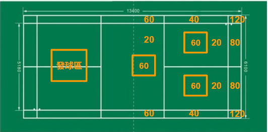

← 返回首頁
🏆 熱血開打！羽球飛鏢淘汰賽 🎯
策略與技巧的終極對決！
一、 比賽總則
- 參賽隊伍： 4 隊，每隊 4 人。
- 目標分數： 每隊起始分數為 400 分。
- 獲勝條件： 隊伍分數最先降至 0 分 (Checkout) 即刻獲勝。
二、 比賽用具與計分方式
- 球具： 羽毛球、羽球拍。
- 擊中扣分： 成功擊中目標區，分數將從隊伍總分中扣除。
- 壓線規則： 若羽毛球落在兩分數線之間，以 分數較低 的區域計分。
- 界外或未擊中： 計 0 分。

三、 賽前準備與流程
- 上場順序： 各隊請自行決定隊員上場順序（1 號至 4 號）。
- 試打時間： 正式開賽前，所有隊伍共同享有 5 分鐘熱身試打時間。
- 開賽順序： 各隊派出一人猜拳決定回合擊球順序。先攻隊伍具有較大優勢，因為有機會先 checkout。
- 每輪流程： 各隊 1 號依序擊球，可擊球兩顆，各隊 1 號隊員完成後為一輪，第二輪為各隊 2 號，依序擊球，依此類推。
- 放棄擊球： 各隊員可選擇 放棄擊球，保留當前分數不進行扣分。
- 成績公布： 每輪結束後，將公佈各隊最新分數！
四、 勝負判定與特殊規則
- 即時獲勝 (Checkout)： 隊伍分數恰好降至 0 分，立即勝出！
- Bust (爆分/出局)： 若擊球後分數降至 負分，該隊伍立即出局，停止後續擊球。
- 最大輪數： 最多進行 八輪。若八輪後無隊伍 Checkout，則強制結算成績。
五、 積分計算與獎勵
🌟 情況一：有隊伍 Checkout (成功降至 0 分)
| 隊伍狀態 |
判定條件 |
積分 |
| Checkout 隊伍 |
成功 Checkout (分數降至 0) |
10 點 |
| 未 Bust 第一名 |
剩餘分數最接近 0 分 |
4 點 |
| 未 Bust 第二名 |
剩餘分數次接近 0 分 |
3 點 |
| 未 Bust 第三名 |
剩餘分數第三接近 0 分 |
2 點 |
| Bust 隊伍 |
分數低於 0 分 |
0 點 |
⚠️ 注意：分數相同的隊伍，取得相同積分
🌟 情況二：強制結算 (八輪結束仍無 Checkout)
| 名次 |
判定條件 |
積分 |
| 第一名 |
剩餘分數最接近 0 分 |
4 點 |
| 第二名 |
剩餘分數次接近 0 分 |
3 點 |
| 第三名 |
剩餘分數第三接近 0 分 |
2 點 |
| 第四名 |
剩餘分數第四接近 0 分 |
1 點 |
| Bust |
分數低於 0 分者，排在未 Bust 隊伍之後，依剩餘分數排名 |
0 點 |
⚠️ 注意：若強制結算時，分數相同的隊伍，取得相同積分
六、 總賽制
- 比賽將進行 兩次 (Game 1、Game 2)。
- 一個場次得一次積分，兩個場次所以共有 兩個取得積分的機會。
七、 計分表範例
📋 以下為單輪計分表範例（第 1 輪 = 各隊 1 號選手擊球），正式比賽最多進行 8 輪
⚠️ 表格中 A、B、C、D 隊順序僅為範例，實際擊球順序由猜拳決定
📌 工作人員職責
- 裁判：主持比賽、判定羽球落地分數
- 計分人員：聽從裁判報出的結果，記錄各隊分數
第 1 輪（各隊 1 號選手）
| 隊伍 |
選手 |
第 1 球 |
第 2 球 |
本輪得分 |
起始分數 |
本輪結算 |
| A 隊 | A1 | | | | 400 | |
| B 隊 | B1 | | | | 400 | |
| C 隊 | C1 | | | | 400 | |
| D 隊 | D1 | | | | 400 | |
第 2 輪 → 各隊 2 號選手、第 3 輪 → 各隊 3 號選手...依此類推
揮灑汗水，精準擊球！期待您的參與！